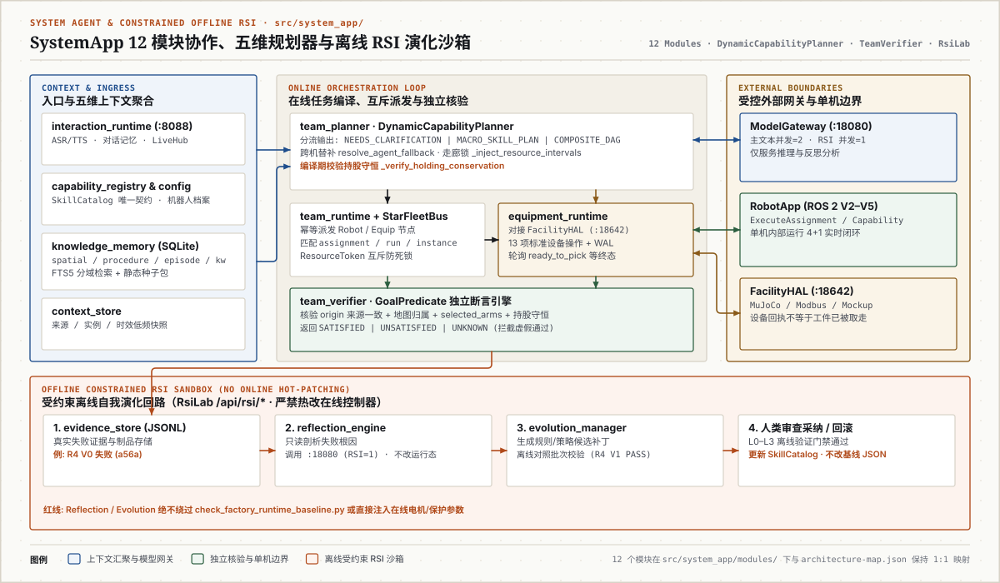

定位与上下游边界
交互网关、语音运行时与模型推理网关共同构筑外部人机界面与底层实时系统之间的三层流量与资源防火墙：上游承接控制台页面、语音终端及视觉裁剪上传请求，下游受控桥接
SystemApp、StarFleetBus 与独立 GPU 模型
Worker。这组服务不持有单机运动控制权，也不直接读取仿真物理真值，确保高并发
HTTP 请求、大分辨率视频流与大模型推理波动均无法冲击核心调度节拍。

InteractionGateway：有界排队与跨域防护（:8090）
src/system_app/interaction_gateway/server.py
默认绑定回环地址 127.0.0.1:8090，是平台 Web
前端与外部脚本访问 SystemApp 的核心 HTTP
代理，并与系统智能体运行时保持严格异步边界：

- 有界异步桥接队列：涉及 ROS 服务或动作的 HTTP
请求均投递至容量限制为
Queue(maxsize=32)的内部队列，不直接阻塞 Web 线程池；SystemApp主循环以20 ms周期执行drain()，每次心跳最多消费8条请求并设置8 sFuture超时上限，在突发高负载时快速拒绝过载而不拖垮调度时钟。 - 跨域请求拦截：网关中间件直接拒绝携带跨源
Origin请求头的浏览器请求，防止未受信任页面越权下发任务指令。
InteractionRuntime：语音交互与导览引擎（:8088）
位于 src/system_app/modules/interaction_runtime/
的交互运行时负责全部多轮人机对话体验：
- 语音管线与流式推送：托管 VAD 语音端点检测、ASR
语音识别、意图解析与 TTS
语音合成调用，配合短时对话记忆消除代词指代歧义；并通过
LiveHubSSE 长连接通道（/api/live/stream）向前端控制台P08观众页及P09–P17运维页面实时推送轮次状态与快照。 - 导览与播报控制：内置
TourEngine管理讲解点位与检查点回溯，并依据/operator/ui-state播报模式控制简明或详细语音输出，辅助操作员完成导览、取消与健康状态核查。
查看 InteractionGateway 与 InteractionRuntime 暴露路由全量清单
| 服务组件与监听地址 | 路由分组 | 暴露端点清单 |
|---|---|---|
InteractionGateway（127.0.0.1:8090） |
规划、任务与记忆路由 | /requests、/configuration、/agent/{status,reset,plans*}、/missions*、/control、/planning-context、/plans*、/catalog、/context、/workpiece-progress、/memory/*、/library/* |
InteractionGateway（127.0.0.1:8090） |
操作员、视觉与演化路由 | /operator/{ui-state,broadcast-mode}、/display/perception/*、/rsi/* |
InteractionRuntime（127.0.0.1:8088） |
语音、导览与 SSE 通道 | /api/audio/{transcribe,speak}、/api/say、/api/tour/{view,operation}、/api/task/cancel、/api/live/stream、/api/health |
ModelGateway：本地模型配额与鉴权守门（:18080）
apps/model_gateway/README.md
所在模块统一托管底层大模型推理与多模态感知后端（包括
model_gateway_service 与基于
nvidia/LocateAnything-3B / xiaomi-lens-0 的
model_gateway_vision），防止多机并发推理抢占 GPU
显存与计算核：
| 资源治理维度 | 冻结限流与安全策略 | 实现机制说明 |
|---|---|---|
| 调用方鉴权 | 分角色 Bearer Token 认证 | 不同调用来源持有独立令牌及专属配额上限，未授权请求直接拒绝 |
| 按工作负载并发限制 | 主文本规划最多 2 并发；RSI 反思最多 1
并发；ASR/TTS/Embedding 各最多 1 并发 |
通过信号量硬性锁定重负载进程并发数，保证交互文本响应不被离线任务饿死 |
| 全局队列容限 | 全局等待队列上限 32，单调用方排队上限
8 |
队满立即返回饱和拒绝，支持
/gateway/v1/requests/{request_id}/cancel 显式取消 |
| 安全工件引用 | 仅允许 media://<root_name>/<rel_path>
逻辑引用与五字段 ArtifactRef |
开启 O_NOFOLLOW 禁止软链逃逸，并在推理读入前强制复核
SHA-256 摘要一致性 |
| Worker 健康调和 | 暴露 /health/{live,ready} 与
/gateway/v1/workers/{model_ref}/reconcile |
独立检测 vLLM、音频与视觉 Worker
存活并按策略拉起/隔离 |
RoiGatewayGuard
与工件视觉感知管线
在多机并行运行场景下，若多台机器人同时持续回传高分辨率原始 RGB-D
视频流，极易耗尽宿主机与总线带宽。系统在
src/system_app/fleet_bus/roi_gateway_guard.py
与单机感知端联合部署了严格的 ROI 流控与位姿校验规则：
- 流数量与像素上限守护：
RoiGatewayGuard默认锁定全局最多同时存在2路活跃视频流（DEFAULT_MAX_ACTIVE_STREAMS = 2），单帧裁剪兴趣区域像素总量限制在640 × 480（DEFAULT_MAX_ROI_PIXELS = 307200）以内，流租约默认 TTL 为15.0 s（DEFAULT_LEASE_TTL_S）；单机侧RoiGatewayClient（roi_gateway_client.hpp）同样限制单包字节上限kMaxRoiPayloadBytes = 512000 B。 - 工件 6D 位姿感知流水线：依据 工件视觉感知
规范，工件识别遵循
RGB-D + CameraInfo -> YOLOv8-seg 分割 -> FoundationPose 注册/跟踪 -> T_camera_object -> 同时刻 TF 变换 -> ObjectObservation(operation_frame)流程。首帧执行5次迭代注册、后续帧执行2次迭代跟踪，并且严格要求当前仅存在唯一匹配工件实例；若出现零匹配、多实例冲突、帧序倒退或epoch跳变，立即丢弃结果并重置跟踪器。